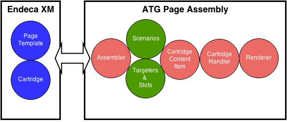

Written by Rajeshkumar Venkatesan on July, 2014.
Preface
In this tutorial, we will see how to create a new endeca cartridge and use it in ATG CRS module. This tutorial assumes the ATG & ATG CRS, Endeca MDEX, Endeca Platform services are installed and working good.

1. Creating Endeca Cartridge Template XML
Create a folder "Hello-World" under "C:\Endeca\APPS\CRS\config\cartridge_templates" and create the below template.xml file with the new cartridge definition. Note: This cartridge a of type "HeaderContent". Copy the thumbnail.png & locale folder from the other existing cartridges (e.g. HeaderBanner-ATGCategory). Update the template description in the "Resources_en" file.
<?xml version="1.0" encoding="UTF-8"?>
<ContentTemplate xmlns="http://endeca.com/schema/content-template/2008"
type="HeaderContent">
<Description>${template.description}</Description>
<ThumbnailUrl>thumbnail.png</ThumbnailUrl>
<ContentItem>
<Name>Hello World</Name>
<Property name="welcomeMessage">
<String/>
</Property>
</ContentItem>
<EditorPanel>
<BasicContentItemEditor/>
</EditorPanel>
</ContentTemplate>
2. Deploying the Cartridge templates to Endeca Workbench
To deploy the newly created cartridge template to Endeca authoring & live run the below control script.
C:\Endeca\APPS\CRS\control\set_template.bat (Assuming the default Endeca Apps install location)
3. Validate the successful creation of Cartridge
Login into Endeca workbench (http://localhost:8006/) and navigate to "content -> Web -> Home Pages -> Default Home Pages" and try adding the "HeaderContent" as "Hello-World" cartridge. If you can see the "Hello-World" header content cartridge then it means the Step-1 & Step-2 above went well.
4. Creating the ATG Cartridge Components
Now the cartridge ATG components has to be created. Follow the below steps. The Endeca assembler source & config files are kept in the C:\ATG\ATG11.0\CommerceReferenceStore\Store\Endeca\Assembler folder as default.
C:\Endeca\APPS\CRS\control\set_template.bat (Assuming the default Endeca Apps install location)
i) Cartridge Handler & ConentItem returned by the handler should be kept under the package atg.endeca.assembler.cartridge.handler.
ii) Create the HelloWorldContentItem.java with the below code
package atg.projects.store.assembler.cartridge;
import atg.repository.RepositoryItem;
import com.endeca.infront.assembler.BasicContentItem;
import com.endeca.infront.assembler.ContentItem;
public class HelloWorldContentItem extends BasicContentItem {
public static final String MSG_KEY = "welcomeMessage";
public HelloWorldContentItem(ContentItem pConfig) {
super(pConfig);
}
public String getWelcomeMessage() {
return getTypedProperty(MSG_KEY);
}
public void setWelcomeMessage(String pWelMsg) {
put(MSG_KEY, pWelMsg);
}
}
iii) Create the HelloWorldCartridgeHandler.java with the below code. Also create the HelloWorldCartridgeHandler.properties (component) which refers the handler source.
package atg.projects.store.assembler.cartridge.handler;
import atg.core.util.StringUtils;
import atg.endeca.assembler.AssemblerTools;
import atg.projects.store.assembler.cartridge.HelloWorldContentItem;
import com.endeca.infront.assembler.BasicContentItem;
import com.endeca.infront.assembler.CartridgeHandlerException;
import com.endeca.infront.assembler.ContentItem;
import com.endeca.infront.assembler.AbstractCartridgeHandler;
public class HelloWorldCartridgeHandler extends AbstractCartridgeHandler {
public HelloWorldContentItem process(ContentItem pCartridgeConfig)
throws CartridgeHandlerException {
HelloWorldContentItem helloWorldItem =
new HelloWorldContentItem(pCartridgeConfig);
helloWorldItem.setWelcomeMessage("Hello World !");
return categoryItem;
}
}
Also, create a Hello World Handlder component using the below properties file.
C:\ATG\ATG11.0\CommerceReferenceStore\Store\Endeca\Assembler\src\
config\atg\endeca\assembler\cartridge\handler\HelloWorld.properties
$class=atg.projects.store.assembler.cartridge.handler.HelloWorldCartridgeHandler
$scope=prototype
iv) A cartridge handler should be mapped to a corresponding Renderer (HelloWorldCartridgeRenderer). Ideally renderers are JSPs. Copy the below JSP renderer into the j2ee-apps\Storefront\store.war\cartridges\Hello-World folder. Where Hello-World is a newly created folder.
v) Finally map Cartridge to CartridgeHandler component.
CommerceReferenceStore\Store\Endeca\Assembler\src\config\atg\
endeca\assembler\NucleusAssemblerFactory.properties
Hello-World=/atg/endeca/assembler/cartridge/handler/HelloWorld
5. Compiling the ATG Cartridge Components
The default build.xml to compile the assembler java codes is already in the "C:\ATG\ATG11.0\CommerceReferenceStore\Store\Endeca\Assembler" folder. Make sure you have the DYNAMO_HOME & DAS_ROOT environment variables set appropriately.
DYNAMO_HOME=C:\ATG\ATG11.0\home DAS_ROOT=C:\ATG\ATG11.0\DAS
Also, install the ANT and set the ANT_HOME environment variable as appropriate and run the build just by typing "ant" in the below folder location. This will compile all the java class created through the previous section.
C:\ATG\ATG11.0\CommerceReferenceStore\Store\Endeca\Assembler>ant
Note: During the final EAR build, ATG runassembler will create a classes.jar & config.jar including the newly created class files. (Refer the MANIFEST.MF)
6. Creating a template
i) Lets create a page which uses this newly created Hello-World HeaderContent cartridge. Create the "HelloWorld" page folder (make sure to change the Folder Type to 'Page') and then create a default landing page. For this "Default HelloWorld Page" assign the existing "OneColumnPage" template by selecting from the list. Refer the below picture.
ii) Assign the "Hello-World" headercontent cartridge as the HeaderContent for the "Default HelloWorld Page". You can also assign "Scrolling Products" cartridge as the MainContent, but it is optional you can leave this empty.
7. Deploy template configuration from Authoring to Live
To deploy the newly created cartridge template to Endeca authoring & live run the below control script.
C:\Endeca\APPS\CRS\control\promote_content.bat
8. Using the cartridge in JSP
Write a simple JSP which uses the "InvokeAssembler" droplet to get the page configuration from Endeca MDEX. Use the below JSP code to create a HelloWorld.jsp. Copy this JSP into the browse folder in "store.war". You may need to create the ATGProduction.ear file with this newly added JSP. Otherwise, copy this JSP directly into the browse folder in ATGProduction.ear under Weblogic domain.
<dsp:page>
<dsp:importbean bean="/atg/endeca/assembler/droplet/InvokeAssembler"/>
<dsp:droplet name="InvokeAssembler">
<dsp:param name="contentCollection" value="/content/Web/HelloWorld Pages"/>
<dsp:oparam name="output">
<dsp:getvalueof var="HelloContent"
vartype="com.endeca.infront.assembler.ContentItem" param="contentItem" />
</dsp:oparam>
</dsp:droplet>
<c:if test="${not empty HelloContent}">
<dsp:renderContentItem contentItem="${HelloContent}" />
</c:if>
</dsp:page>
Access this JSP as "http://localhost:7003/crs/storeus/browse/HelloWorld.jsp" 7003 is the http port of the running ATG CRS instance.
Happy Coding !